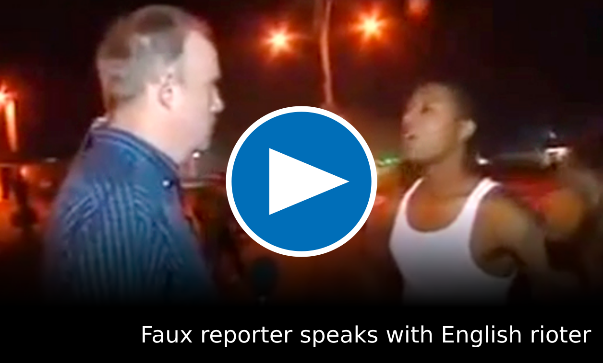

LONDON, ENGLAND — Riots broke out around 10 Downing street as English citizens became unhappy with their current Prime Minister.
Citizens are gathered around the door armed with makeshift weapons, such as tea kettles and fine china. Due to England's overly-restrictive gun laws, they do not have the ability to wield actual weapons.
A questioning with a passing Englishman suggest their less than savoury intentions:
"Maybe if we weren't treated so badly, we wouldn't have to resort to this!"
When questioned what "this" represents, he answered that they are planning on reforming the government from the bottom up.
Further inquiry into the motives of the mob reveal a suprising and disturbing truth. By throwing out the Prime Minister, the British plan to reinstate themselves as a new government and turn to a communistic regime, as shown by this short interview (automatic transcript below):
REPORTER: "Why did you come out here today?"
RIOTER: "We've been staging a peacefu-"
REPORTER: "There are rumors that this revolt is an attempt to turn England over to communism. Is this true?"
RIOTER: "Revolt? Look, we're just mad about taxes, okay? We're just asking for more economic help from the government."
REPORTER: "Explain to me some of the forms of economic help you are seeking out."
RIOTER: "We simply want cheaper education a better system of socialized healthc-"
REPORTER: [turns to camera] "There we have it, England is defending itself from violent uprisings with the goal of implementing socialism, which will inevitably lead to communism. This has been Faux News, back to you."
We have reached out to the Prime Minister, David Cameron, to comment on the current happenings of England. He responded saying he has "more pressing issues to attend to". Evidently, the effect of the rioting has already been pressed into the government. Our political experts have deduced that the Prime Minister is currently implementing communism into it's paradigm.
Our experts have also inferred that the only possible way for such an unprecedented uprising to have taken place was due to the UK's suprisingly unsecured borders.
As of right now, NATO has refused to respond and state its course of action, unbasedly claiming that "the British 'riots' are merely nonviolent petitions against a new tax".
President Obama has failed to respond to Faux News. According to a poll run by our experts, tensions are rising in anticipation for a second red scare. Samples surveyed: Faux News office employees